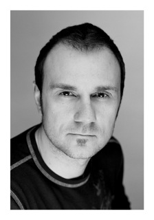

Although Keith may be known around Portland as “The Video Guy,” his expertise expands to all aspects of photography. He has a formal education in Electronic Media and has worked professionally in the areas of radio, feature film, documentary film, series television, commercial broadcast, news, stock video and event promotion since the age of sixteen. Since he is working constantly to keep his knowledge consistent with current shooting styles, equipment and editing software he can assist you in learning everything from simple camera use to producing your own feature length film. As the founding member of Primary Photo Keith is often praised by his clients for his patient, detailed and concise explanations to any question.
“Friendly, pleasant, helpful and patient.” These are just a few of the accolades Tia has received since she began teaching photography in 2005. Along with her husband, she has also enjoyed a successful career in wedding and portrait photography with additional expertise in shooting nature and nightscapes. She has not only owned, but also mastered the use of many Canon, Nikon, Sony, Panasonic and Casio cameras. Tia is passionate about photography, a passion that is seen in her dedication to learn each new software and camera as they are released. She is a master Photoshop and Lightroom editor and has won several Judges Choice awards in the Washington State Exhibition of International Photography.

Shane’s entire life has been centered on photography. Over the years he has developed a skill for bringing out the millions of emotions and experiences in a persons eyes; for juxtaposing a calm star-filled night with the cacophonous pace of one of the most beautiful and creatively divers cities in the world. He grew up assisting his dad, Dale R. Brant, a Master Photographer from Fort Worth, Texas and majored in photography at Sam Houston State. He has freelanced for several studios here in Portland, as well as built a successful wedding and portrait photo business with his wife. Shane is always looking for opportunities to expand his knowledge of photography, and is eager to assist you in doing the same.